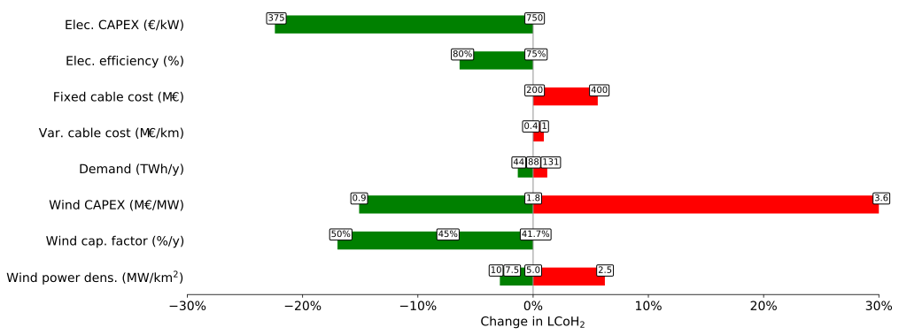

<!DOCTYPE html>
<html lang="en">
  <head>
    <meta charset="utf-8" />
    <meta name="viewport" content="width=device-width, initial-scale=1.0, maximum-scale=1.0, user-scalable=no" />

    <title>Planning green hydrogen production on the Dutch North Sea</title>
    <link rel="shortcut icon" href="./../favicon.ico"/>
    <link rel="stylesheet" href="./../dist/reveal.css" />
    <link rel="stylesheet" href="./../dist/theme/white.css" id="theme" />
    <link rel="stylesheet" href="./../css/highlight/github.css" />

  </head>
  <body>
    <div class="reveal">
      <div class="slides"><section  data-markdown><script type="text/template">

# Planning green hydrogen production

on the Dutch North Sea

<br>

Niels Wouda

01-02-2021

<br>

<small>(feel free to ask questions during the presentation)</small>
</script></section><section  data-markdown><script type="text/template">
# This presentation

- Problem setting

- Results

- Conclusion

<aside class="notes"><p>TODO</p>
</aside></script></section><section ><section data-markdown><script type="text/template">
# Problem setting
</script></section><section data-markdown><script type="text/template">
## Setting

- Hydrogen production from offshore wind electricity

- Electrolysis: $\ce{2H2O + electricity -> 2H2 + O2}$ 

- Wind intermittency (randomness)

<aside class="notes"><p>TODO</p>
</aside></script></section><section data-markdown><script type="text/template">
# Research questions
  
- Where do we place electrolysers?
    - On land, or
    - Offshore, on artificial islands or re-used gas platforms?
- What about robust solutions?  
- What about parameter sensitivity?

<aside class="notes"><p>TODO</p>
<p>Robust wrt wind randomness</p>
</aside></script></section><section data-markdown><script type="text/template">
## Land-based electrolysers


     
<!---  --->

<aside class="notes"><p>TODO</p>
</aside></script></section><section data-markdown><script type="text/template">
## Offshore electrolysers


     
<!---  --->

<aside class="notes"><p>TODO</p>
</aside></script></section></section><section ><section data-markdown><script type="text/template">
# Results

- LCoH$_2$: levelised cost of hydrogen (€/kg)

<aside class="notes"><p>Remember LCoH$<em>2$ as the _production cost</em> of a kilogram of hydrogen.
This is similar to how electricity is priced when constructing new power plants
or energy systems: as the levelised cost of electricity (LCoE).</p>
</aside></script></section><section data-markdown><script type="text/template">
## Deterministic solution


<!---  --->

Compare:
 - Dutch electricity use is about 110TWh/y
 - Total Dutch energy use is about 650TWh/y

<aside class="notes"><p>TODO</p>
</aside></script></section><section data-markdown><script type="text/template">
# Recourse solution


<!---  --->
<!---  --->

($\lambda$: the LCoH$_2$ of stored/imported hydrogen)

<aside class="notes"><p>TODO</p>
</aside></script></section><section data-markdown><script type="text/template">
# Robustness


<!---  --->

- Service level as a function of $\delta \ge 0$

- Robust solutions are rather cheap!

<aside class="notes"><p>This is usually achieved via a (joint) chance constraint in the model formulation.
That did not solve, so instead we built a little overcapacity using the regular,
deterministic formulation. That is very effective in practice.</p>
<p>Given a demand target $d$, we plant $(1 + \delta) d$ instead, for some overcapacity
parameter $\delta \ge 0$.</p>
<p>(this figure based on 10GW/88TWh annually)</p>
<p>Observations:</p>
<ul>
<li>At $\delta=0$% (no overcapacity), the solutions generally have a 50/50 chance of producing
sufficient hydrogen in a year.</li>
<li>That scales <em>rapidly</em> as we increase the overcapacity. At $\delta=5$% the
empirical service level already reaches 98.2% (based on 10,000 samples).</li>
</ul>
</aside></script></section><section data-markdown><script type="text/template">
## Sensitivity analysis


<!---  --->

<aside class="notes"><p>Here we vary individual parameters w.r.t. their baseline parameter levels.</p>
<p>TODO</p>
<p>There&#39;s also a two-way sensitivity plot (where we study the interaction of
two parameter level changes at the same time), but that is nearly impossible to
read from a slide. So for that thing you&#39;ll have to read my thesis :).</p>
</aside></script></section></section><section  data-markdown><script type="text/template">
# Conclusion

- Construct electrolysers on land, or on artificial islands
- Existing gas platforms have no (serious) place in the green hydrogen production chain
- At the national scale, robustness is cheap (+5% cost on average, for a service level around 98-99%)
- Green hydrogen can be produced today at costs around €4-4.5/kg
- Costs are sensitive to
  - Capital costs
  - Electrolyser efficiencies
  - Wind capacity factors
  
  But these are all steadily improving!

<aside class="notes"><p>TODO</p>
</aside></script></section><section  data-markdown><script type="text/template">
# Questions?
</script></section></div>
    </div>

    <script src="./../dist/reveal.js"></script>

    <script src="./../plugin/markdown/markdown.js"></script>
    <script src="./../plugin/highlight/highlight.js"></script>
    <script src="./../plugin/zoom/zoom.js"></script>
    <script src="./../plugin/notes/notes.js"></script>
    <script src="./../plugin/math/math.js"></script>
    <script>
      function extend() {
        var target = {};
        for (var i = 0; i < arguments.length; i++) {
          var source = arguments[i];
          for (var key in source) {
            if (source.hasOwnProperty(key)) {
              target[key] = source[key];
            }
          }
        }
        return target;
      }

      // default options to init reveal.js
      var defaultOptions = {
        controls: true,
        progress: true,
        history: true,
        center: true,
        transition: 'default', // none/fade/slide/convex/concave/zoom
        plugins: [
          RevealMarkdown,
          RevealHighlight,
          RevealZoom,
          RevealNotes,
          RevealMath
        ]
      };

      // options from URL query string
      var queryOptions = Reveal().getQueryHash() || {};

      var options = extend(defaultOptions, {"math":{"TeX":{"extensions":["mhchem.js"]}},"width":1600,"height":1050,"transition":"slide","slideNumber":"c","chalkboard":{"grid":false,"theme":"whiteboard","toggleChalkboardButton":false,"toggleNotesButton":false},"menu":{"numbers":"c","markers":false,"hideMissingTitles":true}}, queryOptions);
    </script>

    <script src="./../_assets/plugin/chalkboard/plugin.js"></script>
    <script src="./../_assets/plugin/menu/menu.js"></script>
    <script src="./../_assets/plugin/plugin.js"></script>

    <script>
      Reveal.initialize(options);
    </script>
  </body>
</html>
